Ornamentación
Como ya sabemos, la música árabe es principalmente melódica, y es en el propio desarrollo de la melodía donde se encuentra su riqueza. Por ello, la ornamentación de las notas que forman parte de esta es un aspecto fundamental, y todo intérprete de ud debe ser capaz de enriquecer una melodía utilizando algunas de las muchas técnicas que existen para ello.
La ornamentación no es un elemento opcional; a la hora de interpretar una pieza, el intérprete debe añadir ornamentos. La ornamentación en la música árabe no es un complemento, sino una parte integral de la música en sí, tan relevante como lo son las propias notas que componen la pieza.
Según escribió el filósofo al-Farabi en su libro Kitab al-musiqa al-kabir (El gran libro de la música), uno de los principales tratados sobre la música árabe, escrito en el siglo X, «los ornamentos deben aportar a la melodía brillo, elegancia, abundancia y belleza».
En el caso del ud, la ornamentación es de especial importancia en las notas de una cierta duración, donde se dispone además de mayor margen para ello. Por carecer de trastes, el ud es un instrumento con poco sustain, donde las notas pierden pronto su sonido después de pulsarse, siendo esto más notorio en las cuerdas agudas que no tienen entorchado. Este hecho no solo no se considera un defecto, sino una característica deseable del instrumento, en especial si se busca una sonoridad clásica.
Es importante mencionar que el uso correcto de la ornamentación no consiste unicamente en aprender las técnicas correspondientes, sino también en desarrollar un sentido de la oportunidad que haga saber cuándo y cómo deben aplicarse. Un exceso de ornamentación es tan problemático como una falta de ella. Escuchar la manera en la que músicos de ud más experimentados hacen uso de la ornamentación es la única manera de adquirir un criterio acertado al respecto.
Los ornamentos y la notación
Es posible escribir la ornamentación utilizando la notación musical habitual, pero no es común hacerlo. La ornamentación la decide el propio interprete en el momento de tocar, y lo habitual es que emplee motivos distintos en una nueva interpretación.
En la música árabe, una partitura representa tan solo la información mínima para dar vida a una pieza, lo que podríamos denominar el esqueleto melódico de esta. Corresponde al músico el complementarla con sus propios elementos interpretativos y embellecerla con su estilo particular de ornamentación.
La partitura cumple la función del texto en una obra de teatro, que indica al actor las frases que debe decir, pero no (salvo indicaciones puntuales) el lenguaje corporal o la entonación. Es decir, que indica qué decir, pero no cómo decirlo.
Puesto que la música árabe no es polifónica y carece de armonía, la partitura de una pieza es única y compartida por todos los instrumentistas. Al no añadirse indicación ninguna referente a la ornamentación, la misma partitura sirve para cualquiera de los instrumentos habituales, y es a partir de ella que cada músico añade la ornamentación correspondiente a su instrumento particular.
Aunque en la mayor parte de la música occidental también hay lugar para que el interprete añada su propia identidad en la interpretación, el margen que permite es más reducido, o al menos no es necesario añadir esos elementos. En la música árabe por el contrario, es obligatorio no seguir la partitura de manera literal, sino construir sobre ella una interpretación más rica y elaborada.
Esta forma de entender la interpretación no es exclusiva de la música árabe, y aparece en otras tradiciones musicales, en especial las que se transmiten de forma oral. Las piezas que forman parte del repertorio son conocidas por todos sus músicos, pero solo de esa manera esquemática, con las notas fundamentales que son las que apuntalan la armonía y la melodía, y cada cual añade después la ornamentación según su criterio. No solo existen estilos personales de ornamentación y de interpretación, sino también estilos regionales definidos por cómo sean los adornos que se aplican a la melodía.
Ornamentos habituales
En el caso del ud, los siguientes son algunos de los ornamentos más habituales, utilizados con mayor o menor profusión según los distintos estilos.
Apoyaturas
El uso de notas de adorno es común en el ud, y las apoyaturas breves (acciacatura) son muy empleadas e importantes para lograr una sonoridad árabe. Lo habitual es que la primera nota (la nota de adorno) sea más aguda que la segunda (nota principal), y en el caso más frecuente, esta última es una nota al aire, de tal modo que solo es necesario digitar primera sobre el mástil. De no ser así, los dedos han de estar preparados sobre el mástil, digitando las dos notas, y el adorno se produce levantando el dedo correspondiente a la nota de adorno inmediatamente después de pulsar la cuerda.
Doble nota
Se trata de una mera repetición de una nota, generalmente utilizando una pulsación descendente y otra ascendente. Con ello se consigue llenar mejor la duración de la nota y al tiempo darle una mayor vitalidad rítmica a la interpretación.
En la partitura, se indica mediante una barra corta horizontal sobre la nota
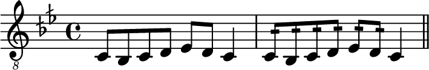
Trémolo
El trémolo, rash en árabe, es una sucesión rápida de movimientos de púa ascendentes y descendentes sobre una misma nota. Es uno de los ornamentos más característicos del ud en el estilo árabe. Tanto es así, que se asume que cualquier nota de larga duración se tocará en forma de trémolo, aun si se añaden a ella también otro tipo de ornamentos.
El trémolo puede ser corto, en cuyo caso tiene tres notas, o más largo. El trémolo corto se logra con una tensión repentina de la muñeca, que crea un efecto de ráfaga breve.
Se indican en la partitura, respectivamente, con una barra horizontal doble o triple sobre la nota.
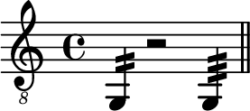
A diferencia del trémolo largo, las notas en el trémolo corto no tienen todas ellas la misma duración. Las dos primeras tienen una duración de la mitad de tiempo que la última. Es decir, que lo anterior equivale a:
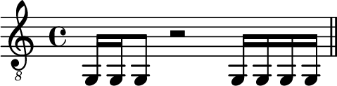
Es habitual variar la posición de la risha para la realización del trémolo, situándola más perpendicular a las cuerdas, de forma que el contacto con estas se realice con la parte frontal de la púa.
Octavas
Otra técnica empleada con frecuencia en el ud es la duplicación de la línea melódica utilizando notas una octava por debajo (en cuyo caso recibe el nombre de qarar) o por encima (jawab).
Es frecuente utilizar esta técnica para notas aisladas, en particular cuando se añade la nota una octava inferior y esta se toca mediante una cuerda al aire, de tal manera que no es necesario ningún movimiento adicional de la mano izquierda. Riad Al Sunbati empleaba con frecuencia este recurso como parte característica de su estilo.
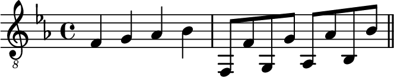
Vibrato
El vibrato es una técnica fundamental en el ud, sin la cual resulta imposible lograr su sonoridad característica.
El vibrato consiste en un oscilación rápida de la altura de la nota, y se produce haciendo vibrar la mano izquierda sobre el mástil repetidamente, una vez que la nota está pulsada.
El movimiento que produce el vibrato se realiza principalmente con el codo, moviendo todo el antebrazo, en especial cuando el vibrato es intenso. No se realiza con la muñeca o los dedos, como es habitual en la guitarra. El movimiento de las yemas de los dedos se produce en la dirección que define la propia cuerda.
El dedo pulgar debe situarse en una posición firme en la parte superior del mástil, con el fin de tener buena sujeción.
El vibrato puede hacerse con cualquiera de los dedos de la mano izquierda pisando la cuerda, pero cuantos más dedos estén apoyados, mayores serán la fuerza que puede aplicarse y la estabilidad del movimiento, y por tanto, mayor la intensidad del vibrato que puede obtenerse.
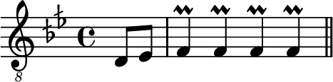
Glissando
Al carecer de trastes, el oud permite la ejecución de glissandos continuos.
El glissando se emplea tanto para hacer una transición ligada entre dos notas de la melodía como para ornamentar una sola nota, a la que se llega deslizando el dedo desde otra posición, por lo general más grave. Éste efecto es similar a una apoyatura.
Mordentes y trinos
El mordente consiste en una alternancia rápida entre una nota, la inmediatamente superior o inferior, y de nuevo la nota de partida. Es un ornamento muy utilizado en el ud.
Generalmente se aplica entre una nota y la situada un semitono o un tono por encima de ella, según sea el caso para que esta última también pertenezca al modo melódico en el que se esté tocando.
Una forma de mordente particular muy empleado, y con una sonoridad muy característica del ud y de la música árabe, es aplicar el mordente con un único dedo, deslizando este. El mismo dedo que apoya sobre la cuerda en el mástil para producir la primera nota se desplaza hasta la posición de la segunda nota y vuelve después a la anterior, sin que intervenga en ello ningún otro dedo de la mano izquierda.
Este tipo de mordente deslizado solo se aplica entre una nota y la situada un semitono por encima.
Gruppetto
El gruppetto, en la forma en que aparece como ornamento en el ud y la música árabe, consiste en la sustitución de la nota por un patrón de cinco notas que utiliza las situadas inmediatamente por encima y por debajo de ella (siempre dentro del modo melódico en que se trabaje al igual que se dijo para el mordente). Si la nota en cuestión la denotamos como B, la anterior como A y la posterior como C, el gruppetto tiene la forma BCBAB. Un ejemplo de gruppetto es el mostrado a continuación, aplicado sobre la nota mi bemol.
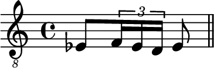
En este ejemplo, la nota re se toca con la cuerda al aire, lo que facilita la digitación y ejecución del gruppeto.
Nótese que la primera nota tiene mayor duración, y es la frase ascendente la que representa el adorno como tal.
La pulsación del motivo melódico admite diversas alternativas. La más habitual es tocar la primera nota con un golpe descendente de púa, la primera de las notas cortas con uno ascendente, ligar esta con las siguientes dos, y finalmente tocar la última nota con una nueva pulsación descendente. Es decir:
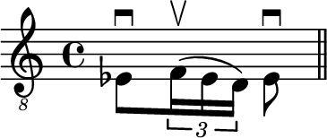
Otra opción habitual es combinarlo con un trémolo, de tal manera que se pulsan todas las notas. El patrón rápido ascendente se correspondería con un trémolo corto de tres notas.
Combinación de ornamentos
Los ornamentos pueden combinarse para crear distintos efectos.
Por ejemplo, según se acaba de comentar, las tres notas que se tocan como parte de un mordente se pueden hacer sonar con una única pulsación, pero es también habitual utilizar para ello un tremolo corto, de tal modo que cada una tenga su pulsación.
De igual modo, un tremolo largo puede aplicarse sobre un trino para darle más intensidad y presencia.
El tremolo también puede combinarse con el uso de octavas, añadiendo la nota adicional y tocando el trémolo sobre la nota de la melodía, o bien al contrario.
Una técnica muy utilizada por Farid Al Atrash consiste en puntuar una melodía con notas dobles sobre una cuerda inferior tocada al aire. Sirva el siguiente ejemplo.
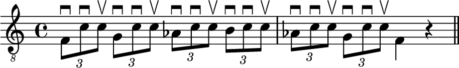
En este caso, la melodía se toca sobre las cuerdas 2 y 3, y entre las notas de esta se intercalan las notas do de la primera cuerda al aire. Las dos primeras notas de cada tresillo se tocan con pulsaciones descendentes, y la última con pulsación ascendente.
Las notas dobles pueden sustituirse por trémolos de cuatro notas, lo cual crea un efecto similar al del trémolo en la guitarra flamenca.
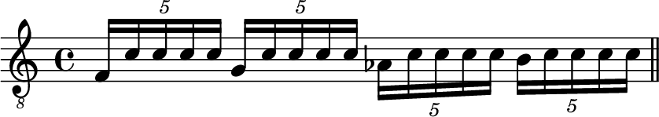
Tanto en uno como en otro caso, las notas de la melodía siguen sonando mientras se toca la doble nota al aire o el trémolo.
[secuenciasmelodicasvocabulario]
Secuencias melódicas
Aunque no se trata de una técnica como tal, es habitual ornamentar las melodías mediante el uso de secuencias melódicas. Es decir, de patrones breves que se repiten, desplazados a lo largo de las notas de la melodía. Algunos de ellos tienen una sonoridad que es muy característica de la música árabe, y aparecen con frecuencia.
Para ilustrar esto, se muestran a continuación dos ejemplos, con fragmentos transcritos en su forma original y con el uso de una secuencia melódica.
El primero es de la pieza Lamma Bada Yatazanna.
Sin ornamentación:
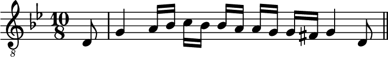
Con ornamentación:
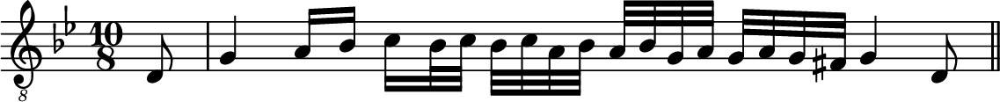
A continuación, un fragmento de la frase inicial del tema Longa Farahfaza, de Riad Al Sunbati.
Sin ornamentación:
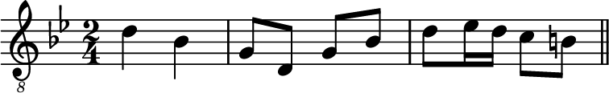
Con ornamentación:
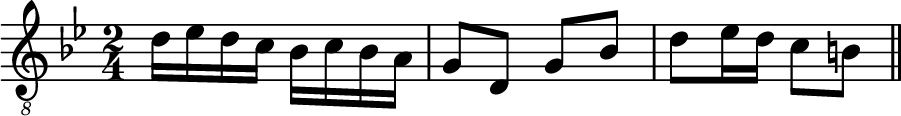
La ornamentación y los maqamaat
El uso correcto de los ornamentos implica conocer en qué ocasiones es pertinente aplicarlos y cuándo no, para mantenerse dentro de las reglas estilísticas definidas por la tradición de la música árabe. Hay una relación directa entre este hecho y los distintos maqamaatb, ya que, igual que un determinado ornamento puede o no ser adecuado en una parte de la melodía, también lo es en función de la nota del maqam que se toque.
Por ejemplo, en maqam Bayati, el vibrato sobre la tercera nota (fa) es casi obligatorio y suele tratarse de un vibrato fuerte, para enfatizarla lo más posible. Sin embargo, es muy poco común aplicar vibrato a la segunda nota (mi semibemol).
En general, en las notas que utilizan cuartos de tono no suele aplicarse vibrato.
Cada maqamb, como ya se ha dicho, tiene una serie de notas con mayor importancia, y ello condiciona la forma en que los ornamentos se aplican sobre esas notas y las restantes.